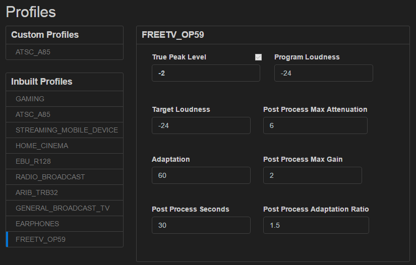

Loudness profile fields explained
Explanations for each of the fields displayed in a Loudness Profile are explained below:

Maximum True Peak Level
The True Peak Level is “the maximum (positive or negative) value of the signal waveform in the continuous time domain.”From Recommendation ITU-R BS.1770-4 (10/2015)
The True Peak level measures loudness values between sample peaks with a specially designed algorithm. True Peak measurement reveals inter sample peaks that can be missed in the quantization process, and which have the potential to inflate the upper limit of the measured Loudness Range, resulting in a measured Program Loudness level that is skewed toward the higher value.
Enabling and setting a Maximum True Peak Level, limits the maximum value of the Loudness Range to the configured value, resulting in a loudness normalization process which produces a Program Loudness level which is more representative of the audio signal.
Measured in Decibels True Peak (dBTP).
Enter a value between -10 and 0 dBTP. Defaults vary by standard and range between -1 to -2 dBTP.
Program Loudness
Program Loudness is “the integrated loudness over the duration of a program.” From EBU – Recommendation R 128 (June 2014)
It is a measure of the average perceived loudness of the audio signal over the duration of a program.
If the Program Loudness of the input audio is known that value should be entered here. If the input audio Program Loudness value is unknown, then use the default value. Loudness processing will occur to attempt to normalize output to the Target Loudness value.
Measured in Loudness Units Full Scale (LUFS). 1 LUFS = 1 LKFN (Loudness K-weighted Full Scale) = 1 decibel (1 dB).
Enter a value between -50 and 0. Defaults vary by standard and generally range between -16 to -24 LUFS.
Target Loudness Level
The Target Loudness is the expected Program Loudness to be output as a product of the loudness normalization process.
Program Loudness is a measure of the average perceived loudness of the audio signal over the duration of a program.
The Target Loudness is a value which facilitates the exchange of audio content. Audio content should be engineered to meet Target Loudness levels so that the recipient of the audio content has the assurance that it conforms to the agreed specifications. If content which does not meet Target Loudness is used as input, a gain or loss may need to be applied to it so that it is brought into compliance with the required loudness standards.
This value should be set to the expected output Target Loudness value as specified in the loudness processing standard relevant to the jurisdiction which applies to the broadcast facility. For example, In Australia the value should be set to -24 LUFS (FreeTV OP59) for Broadcasting distribution.
Measured in Loudness Units Full Scale (LUFS). 1 LUFS = 1 LKFS (Loudness K-weighted Full Scale) = 1 decibel (1 dB).
Enter a value between -40 and -1. Defaults vary by standard and generally range between -20 to -24 LUFS
Post Process Max Gain
This value specifies the maximum gain that can be applied during the loudness normalization process in order to meet the output Target Loudness. The gain is applied to the average level measured across the length of the program. The length of the program is determined by the value in the Post Process Seconds value.
Measured in Loudness Units Full Scale (LUFS). 1 LUFS = 1 LKFS (Loudness K-weighted Full Scale) = 1 decibel (1 dB).
If a value of 0 is entered, the normalization process applies gain where needed without using a limiting value.
Post Process Max Attenuation
This value specifies the maximum attenuation (reduction) that can be applied during the loudness normalization process in order to meet the output Target Loudness. The attenuation is applied to the average level measured across the length of the program. The length of the program is determined by the value in the Post Process Seconds value.
Measured in Loudness Units Full Scale (LUFS). 1 LUFS = 1 LKFS (Loudness K-weighted Full Scale) = 1 decibel (1 dB).
If a value of 0 is entered, the normalization process applies attenuation where needed without using a limiting value.
Post Process Seconds
This value sets the duration of the audio program used in the algorithm to apply the Program Loudness level adaptation for the audio stream.
When computing a Program Loudness level for an audio file, the overall length of the file is used as the program length. When processing a continuous audio stream, the underlying loudness processor must compute a loudness level from within the stream and not a from static length file. For this reason a program length must be arbitrarily set to allow the loudness algorithm to compute a Program Loudness level from a portion of the stream temporarily stored in a memory buffer.
Measured in seconds.
Values typically range between 20 and 60 seconds
Adaptation
The amount of loudness adaptation applied to the incoming audio signal.
*Adaptation relies “on the state-of-the-art loudness processing provided by Linear Acoustic® APTO™.stream loudness processor. The audio signal is carefully controlled in a way that preserves the transients, sonic image and artistic intent of the source, while increasing dialog intelligibility and loudness consistency. Consequently, a dynamic and balanced mix can be tailored to any destination platform, from theatrical to mobile, without resulting in subjectively perceived compressed sound.
Advanced Loudness Adaptation uses psychoacoustic analysis processes on the source file and in between any levelling steps that drive adaptive decision matrix to determine the intensity and type of processing required. This fully automated workflow ensures ideal results in terms of audio quality and standard compliance. Audio that is deemed already compliant for the intended use case will pass through the workflow untouched.”* From Linear Acoustic® APTO™.stream description.
A lower value will result in lower dynamic reduction, (a wider Loudness Range). A higher value will result in a higher dynamic reduction (a narrower Loudness Range).
Measured in percentage (0%-100%).
Post Process Adaptation Ratio
The amount of gain or attenuation allowed per second during the overall program loudness normalization process. A higher value (2-6 LU) will result in faster compliance with the Target Loudness, but may introduce user-perceived gain changes. A lower value (0.5-2 LU) will contribute to a more subtle loudness normalization process to achieve the Target Loudness level, with a less perceptable change to the overall loudness.
Measured in LU (Loudness Units). 1 LU = 1 dB.
Suggested values should be in the range 0.5 to 2 LU.